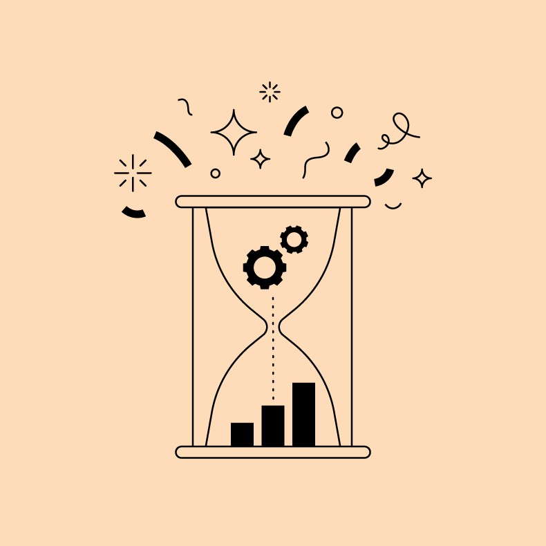

Time Management

Time management is organizing and managing your time. Using time management helps with spending more time on important activities and less time on unimportant activities. This involves prioritizing activities and setting both short term and long-term goals. Through using time management, you can get more done at a higher quality in less time.
Image is an edited version from [1]The benefits of time management are as follows.[2]
- Stress relief through clear progress- Checking off items on your to do list lets you know that you are making progress on your work and how close you are to being done, reducing stress.
- More time- Finishing up work through good time management leads to more free time for hobbies and socialization.
- More opportunities- Employers prioritize time management skills and time management and scheduling work are useful in almost all fields.
- Reaching goals- Practicing time management helps with achieving goals in a shorter timespan.

The consequences of poor time management are as follows.
- Poor workflow- Not prioritizing tasks correctly can lead to spending time on unimportant or non-urgent tasks while urgent tasks remain unfinished.
- Wasted time- Not having a schedule can lead to wasted time. You can potentially believe you are done with your work when you still have remaining tasks.
- Increased stress- When you do not know what tasks you have to do, you become more stressed due to not feeling in control.
- Poor work quality- Poorly managing time leads to having rush work that ultimately is lower quality than work that is properly scheduled.
- Poor reputation- If you cannot finish tasks efficiently, employers will most likely not promote you and possibly remove you from your position. Clients will also not want to work with you and will prefer to work somewhere that tasks are finished efficiently and on-time.